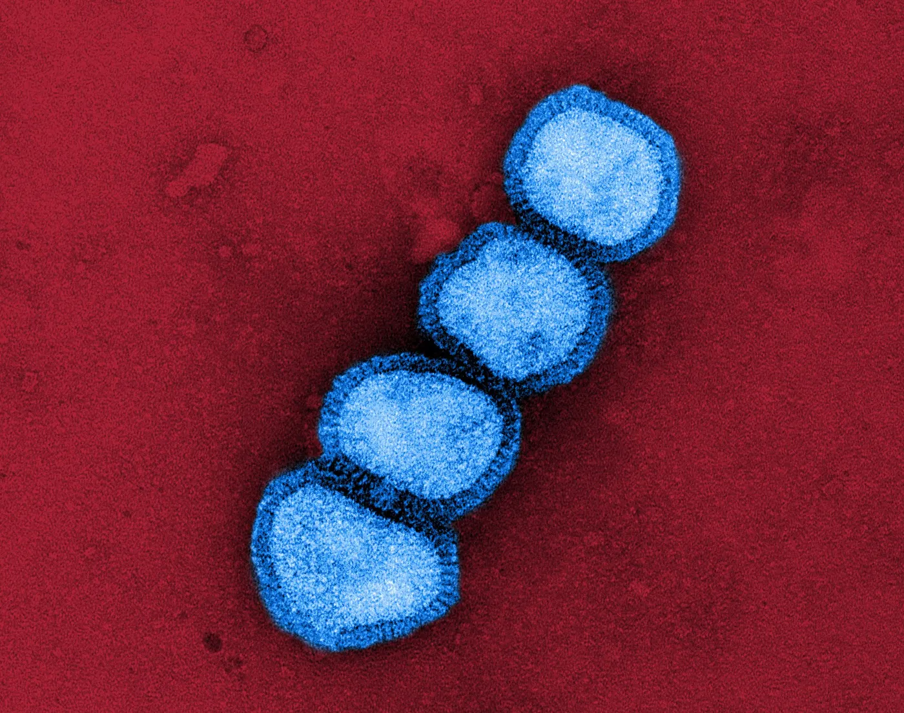
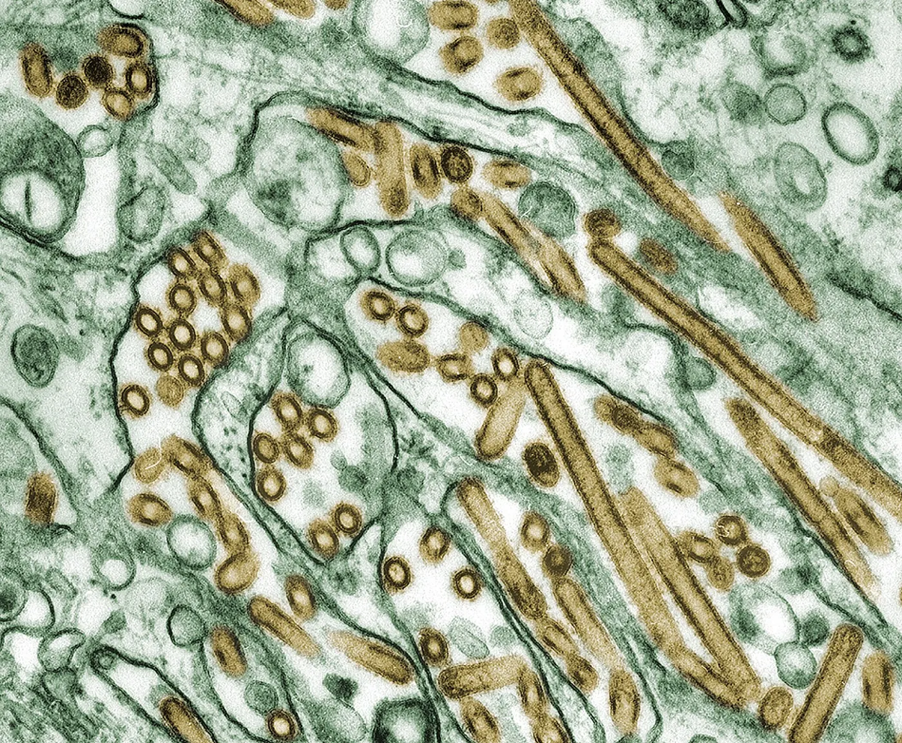
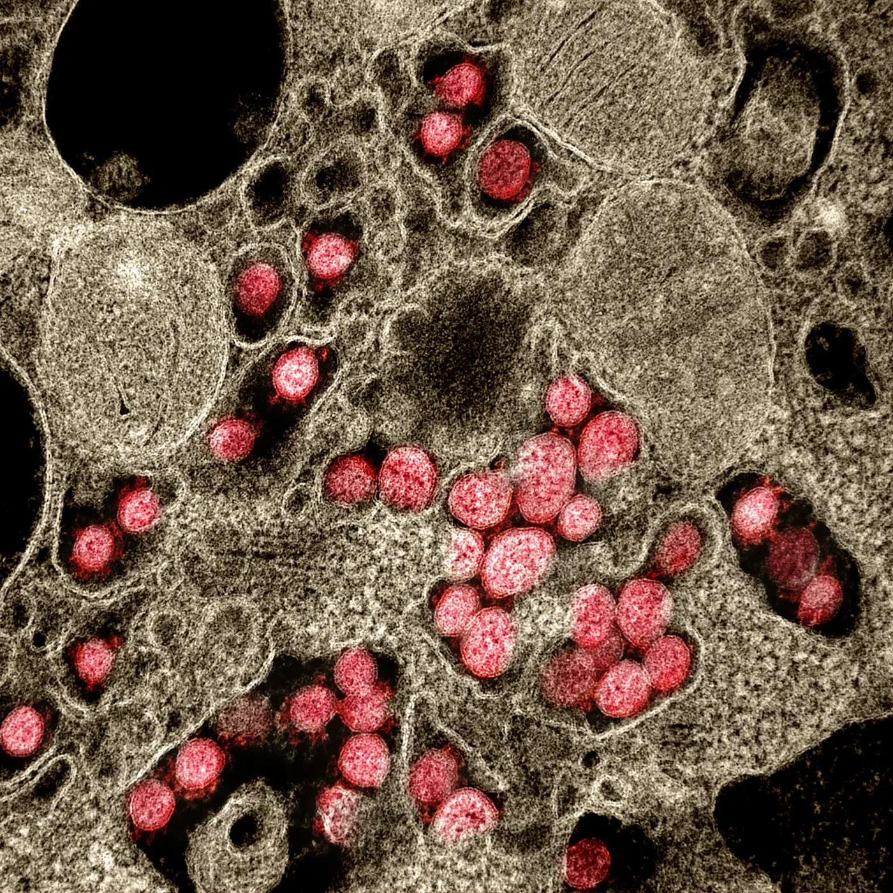
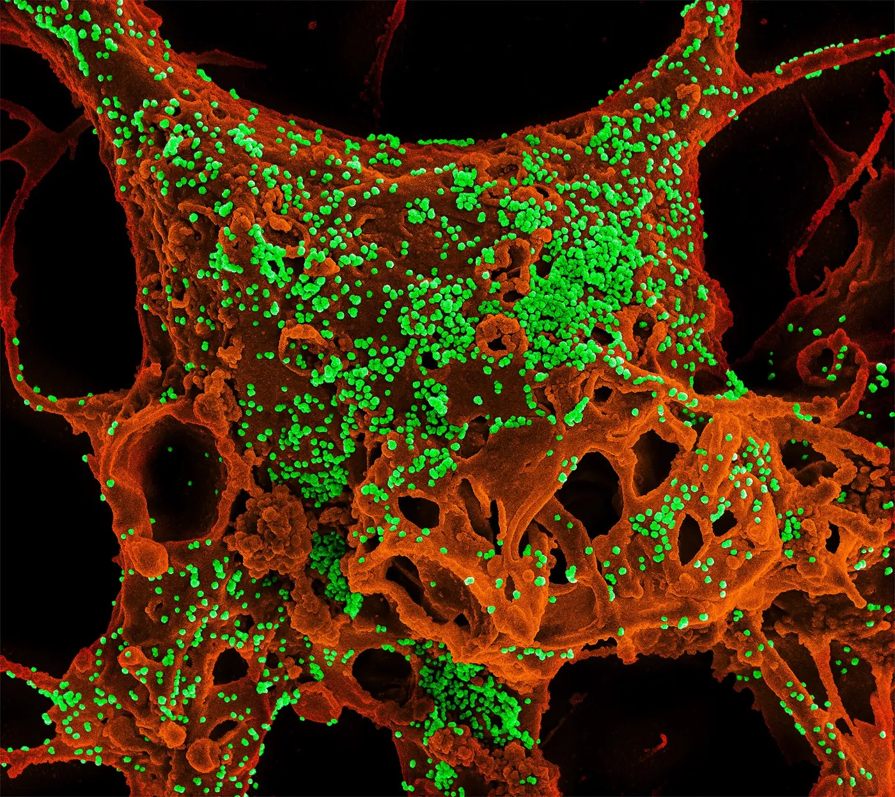
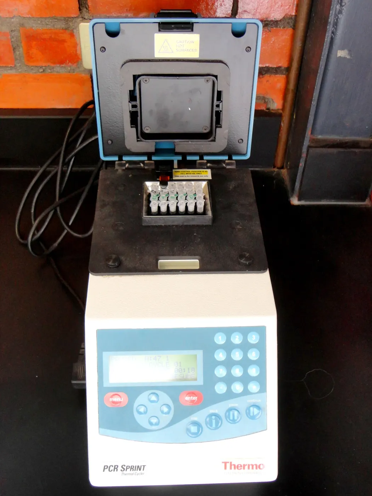
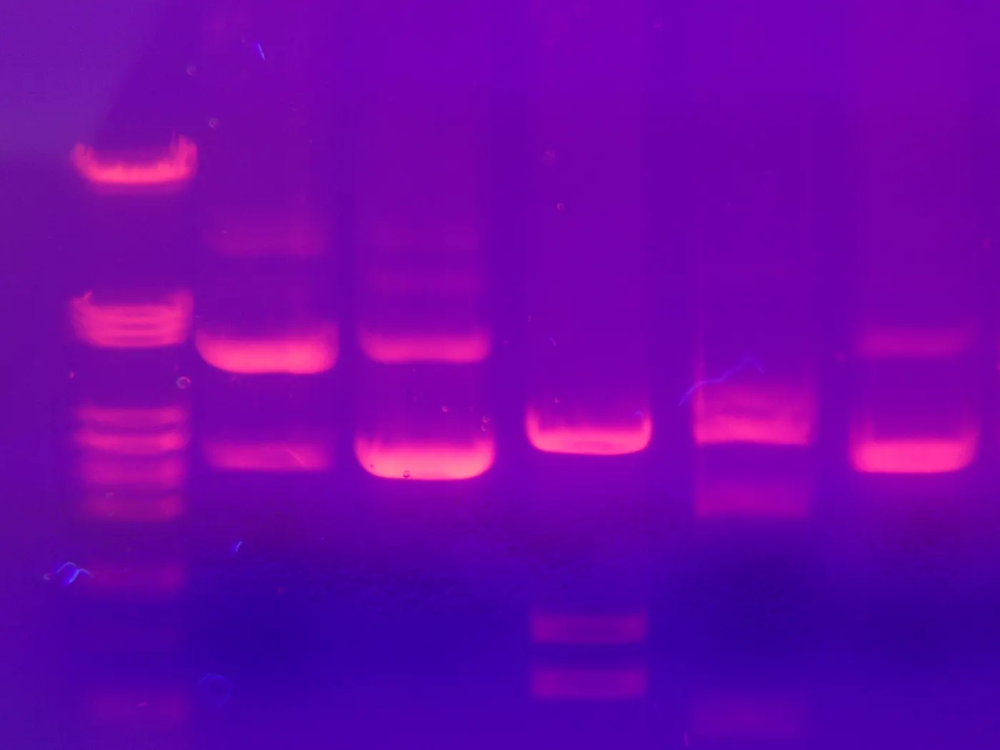

Primers that fit every strain
Drop your genomes, say how many amplicons you want, and viraprime tiles the whole genome with overlapping primer pairs in two pools, each one checked against every sequence.
Coverage check · example family, 10 sequences
100% 10 of 10 amplified
| Sequence | Forward 3′ on the right | Reverse site 3′ on the left | Result |
|---|---|---|---|
| Rank-1 pair of the example run. Turn on JavaScript to re-score it live. | |||




One reference is not the family
A primer copied from a single genome can fail on the strain in the next sample. viraprime starts from all of them: it aligns your sequences, takes the majority base at every column, and keeps only the pairs that still bind when each strain is tested on its own.
- 802 of 1,202
- alignment columns fully conserved in the example family
- 100% vs 30%
- best coverage in its conserved and hypervariable regions
How it works
First, line up every sequence
MAFFT or MUSCLE 5 aligns the family. Sequences far from the median length are dropped before they can skew it.
What a run writes
One row per reported pair: both sequences, Tm, GC, amplicon coordinates on your reference, coverage, and which strains it misses and why.
The table is the order form
Rank 1 is the pair that covers the most strains, with the lowest primer3 penalty among them. Send both sequences to synthesis as they are; degenerate positions are already written in IUPAC code with their Tm range.


Built on
Common questions
-
No. Open the web app, drop your FASTA and choose the number of amplicons. The analysis runs in your browser, so your sequences are never uploaded. For very large sets, the command line is faster.
-
A consensus is a sequence that may exist in no real sample. A pair that fits it can still miss several strains, often right at its 3′ end. viraprime keeps primer3’s design and judges every pair on the real sequences.
-
A different base, a gap, an N or any ambiguous base in the sequence, and every base the sequence has in addition to the primer. A degenerate primer base matches each base it stands for.
-
The run finished and wrote every file, but at least one amplicon (or region) does not reach the coverage threshold. It is flagged below_threshold and report.txt counts why it misses sequences.
-
Yes. Pass it with --aligned and the aligner step is skipped, so neither MAFFT nor MUSCLE needs to be installed.
-
Yes. List them as name, forward and reverse in a tab-separated file and run viraprime check. Each pair is found on the consensus and scored on every sequence with the same rules as design.
-
1-based, inclusive positions on the reference sequence: the first one in the file, unless you name another with --reference-id. They are mapped to alignment columns for you.
-
One position at a time: the change that rescues the most sequences wins, then the one removing the most mismatches, then the one farthest from the 3′ end. Changes that rescue nothing are undone.
-
Python 3.10 or later, Biopython, primer3-py 2, and MAFFT or MUSCLE 5 on your PATH. The README has a one-line conda command for all of it.
Start with your FASTA
Name your FASTA, choose the number of amplicons, copy the command. The primer table, the primer scheme and the report land in the folder you name.